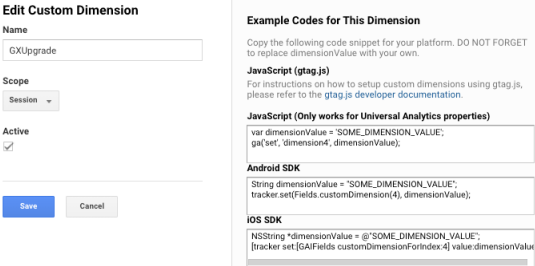

Controls: Google Analytics Control
When using the Google Analytics Control you can specify an SDT containing a list of dimensions to discriminate further when doing the site analysis.
Each property in the SDT is a dimension, and the value of the property, it's value, they must be preconfigured within the Google Analytics Console. Make sure to review the Google Analytics site documentation on dimensions.
From the GeneXus side, create an SDT with items Key / Value (both character datatypes) and assign whatever you want in runtime (it applies to the PageView Track event). Each SDT item is a dimension and you must keep the conventions detailed on the Google Site, where the dimensions properties starts with the dimension prefix and then references an index.
Make sure to assign the Dimensions User Control property to the associated SDT variable.
This property applies only at run-time.
Consider the following code snippet:
&GADimensions.dimension1 = !"Some value" &GADimensions.dimension2 = !"Some other value" &GADimensions.dimension3 = !"Again some salue" &GADimensions.dimension4 = !"Again some other value"
On the Google Analytics side, you will need to create the custom dimensions and make sure to match the correct index the following sample image shows that dimension4 will be displayed as "GXUpgrade".

The assigned properties will automatically be detailed as expected. You will be able to analyze the data by the defined dimensions.
To apply the corresponding changes when the property value is configured, execute a Build with this Only of the object.
This property is available since GeneXus 17 upgrade 5.
| Backlinks |
| Google Analytics Control |